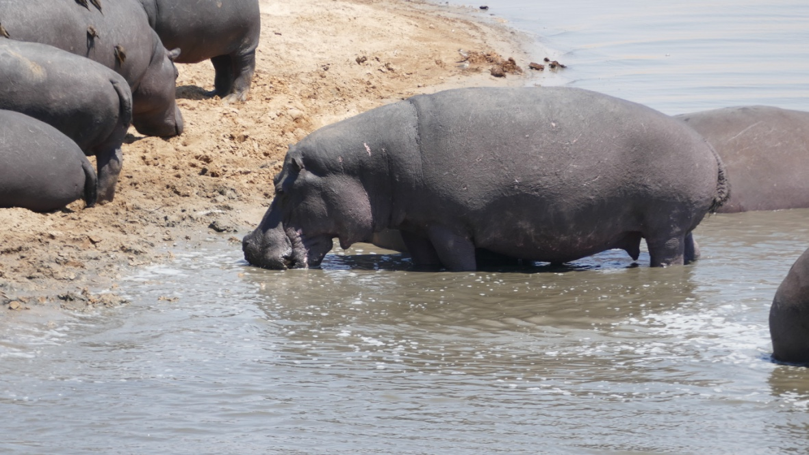
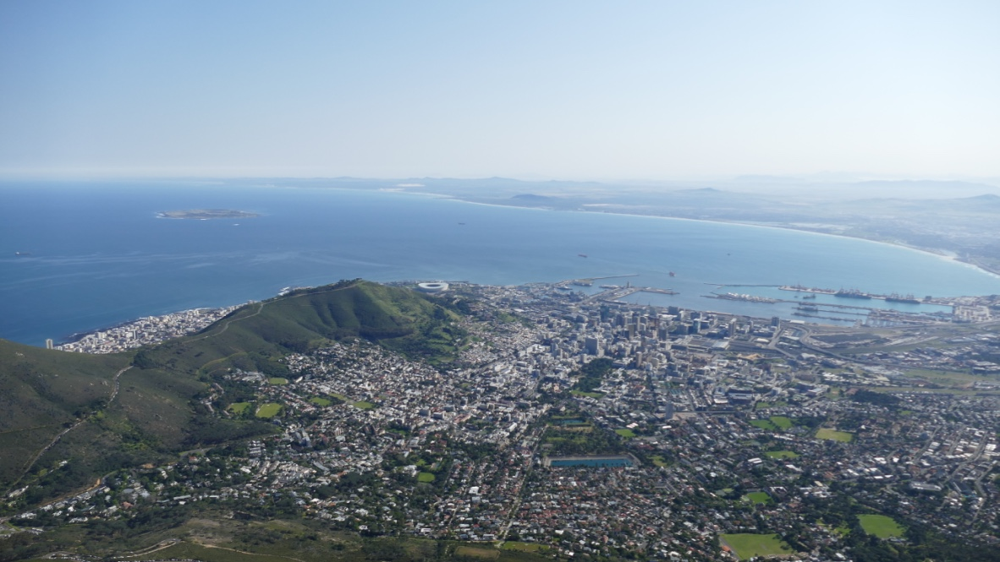
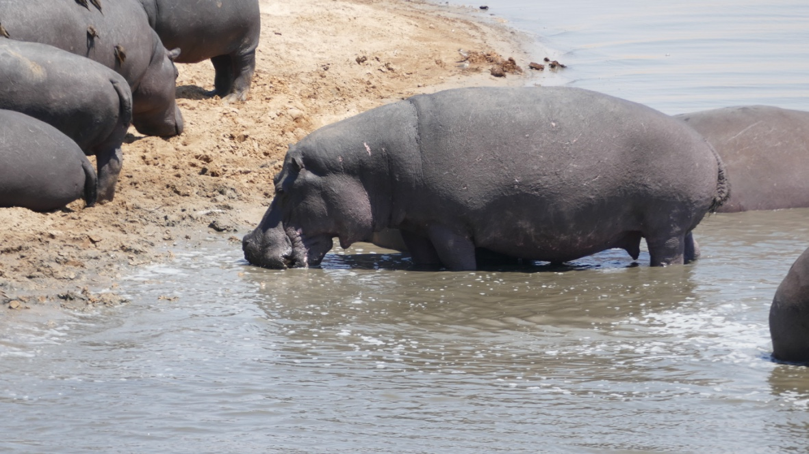
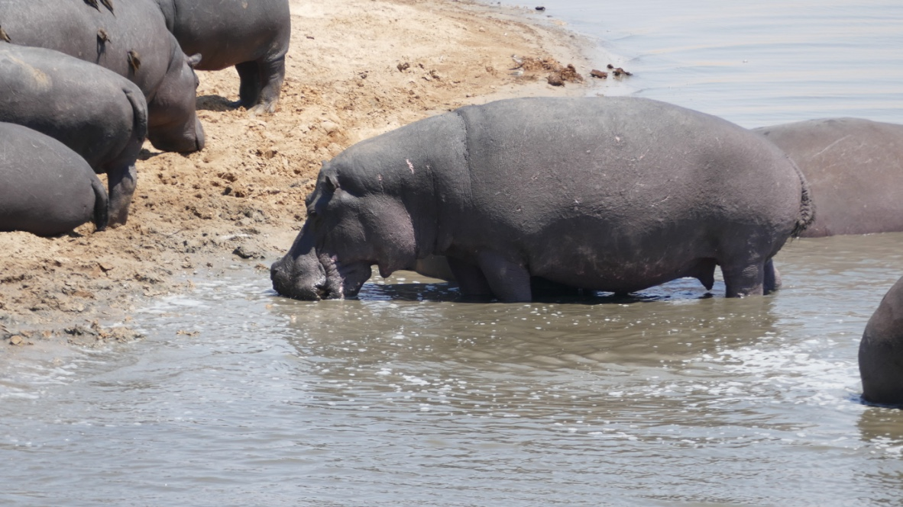

On my first visit to Africa, I realized how beautiful this continent and it's countries are. It made me
sad to realize how much the Western world has tried to shape a culture they maybe just don't understand. It's hard
to ignore how colonized and abused Africa has been. I hope to go back soon and do my part to spread the knowledge of
how great it is.
Zimbabawe
Harare
I flew into Harare to begin a 3 week Safari excursion of Southeastern Africa. This was a once-in-a-lifetime expereince
that was the best trip of my life.
Hwange National Park
Hwange is the first national park we stayed in. We had beautiful tents set up that probably shouldn't even count as tents.
Each morning everyone would wake up basically with the sun- around 6 AM. After a lovely breakfast we would head out in the jeeps to see some animals
before the heat of the day sent everyone running for cover. During the afternoons would be down time to read, nap, journal. One of the best parts of this experience was no
access to wi-fi. Completely unplugged. Our guides were fantastic, and just at this first location did I get the chance to see lions, elephants, a cheetah, and zebras. Most of the
animals didn't come to close to us on this go-round.
Victoria Falls
Victoria Falls is small but plesant to stay in. Because the waterfall is amazing!
Here, we went to the national park to get a view of Victoria Falls and it did not dissapoint. It's beautiful, and you can see it from so many
vantage points in the park. The best part for me was getting to see it from above via helicopter.
In Victoria Falls we also had some delicious Zimbabawean food, walked through the market, and got to relax a little bit. We also took a dinner
cruise on the Zambezi river, which is what flows down the falls. This was really fun and beautiful.
Zambia
Kafue
Kafue was our second desination, along the Lafupa River. The main point of this spot was to see some hippos. And my, did we. They scared me much more
than I thought they would. Maybe it was that I had studied up on them-- hippos are the deadliest animal in Africa. They will sneak up on people and kill them just
for being in their river. So when I saw their heads poking out of the water, studying us on our boats, I had reason to be afraid. But the worst/coolest park was that
they leave the river at night and we could hear them outside our tent! They are noisy, all 3.5 tons of them, and they make what
the locals call 'Hippo Highways' along the river where they exit. One of the best parts was getting a repreive from the heat
out on the river, having "sundowner" drinks and watching the beautiful Zambian sunsets.

Botswana
Kasane
We traveled in and out of Kasane, which was very small. It is near the "four corners", where
Zimbabawe, Zambia, Botswana, and Namibia meet.
Chobe National Park
Chobe National Park was my favorite place we went. First of all, we were essentially staying in a tree house. The accomodations were amazing everywhere we went but this one was
fun. Second, we had the craziest wildlife interactions. We drove basically through a herd of elephants grazing (they have to graze all day to make up for all the walking they do!).
I was so excited to see elephants-- and they were less than 6 feet from us! But it was very intimidating to realize how large these animals really are. And how wild.
The second greatest thing was we had two lions- male and female- cross right in front of our jeep! They couldn't care less about us (which made them my new favorite) but it was amazing
to see them this close. And then, two males got in a little skirmish! It was incredible. We also got to "walk to Namibia" because the national park shares a border with Namibia. It was so hot
(123 degrees!) that I thought I was going to pass out.
We also saw the intense cape buffalo, more giraffes, impala, alligators, wild dogs, and so many birds. It was unforgettable.
Okavango Delta
The Okavango Delta was different from the other national parks we had stayed at-- we spent most of our time on canoes or treking through
shallow water in the jeep, which was fun! We got to see many animals at their watering holes-- including some poor warthogs who got chased away by a
territorial elephant! Being on the canoes was a little scary, because you don't know whats it the water (they clear it ahead of time to make sure there's no hippos), but it
was extremely peaceful.
South Africa
Cape Town
Cape Town felt like a culture shock after being on safari for 2 and a half weeks. Cape Town felt very European to me...probably because
many Europeans go there and have influenced it. In Cape Town, we took the gondola up to Table Mountain (you can also hike), walked through the botanical gardens,
visited Cape Point and the Cape of Good Hope, and the Bo-Kaap neighborhood.
But my favorite part was Boulder's Beach, where there is a look out to see the hundreds of penguins that use that beach. They are so silly and easy to watch, I could have stayed there
for hours!

 
